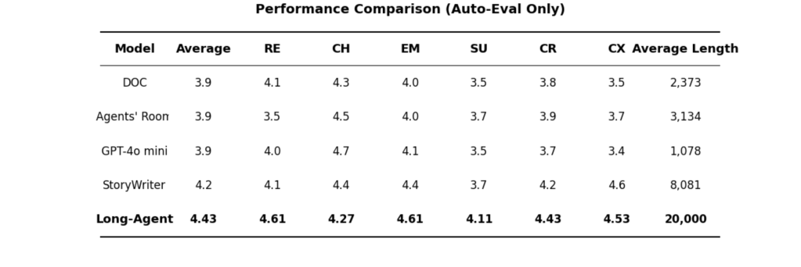

核心特性
多 Agent 协作
剧情、人物、世界观、检索、评估、写作分工明确，提升长篇一致性。
动态记忆系统
按章节与轮次写入向量记忆，支持持续检索与上下文强化。
静态知识库
可导入领域资料，快速扩展世界观与细节密度。
一致性与转折点
跨章节一致性检测 + 转折点追踪，避免剧情漂移。
实时编辑器
自动识别需修订片段，按策略回写内容。
可控生成
目标长度、章节规划、快速模式、评估间隔等可配置。
系统架构
从任务分析、全局大纲、章节生成到一致性评估与修订的完整闭环。


快速开始
1. 安装依赖
pip install -r requirements.txt2. 配置 API Key
set DEEPSEEK_API_KEY=your_key
# 或者
set OPENAI_API_KEY=your_key
set CODEX_API_KEY=your_key3. 运行生成
python main.py
提示：可在
.env 中设置环境变量；更多参数见下方配置表。
效果示例
示例主题
科技比赛小说 · 2万字目标
生成长度
13,790 字
迭代轮次
8
最佳奖励分数
0.795
片段预览
林深盯着手中那枚芯片，指尖传来金属特有的冰凉触感。芯片约指甲盖大小， 边缘有细微的磨损痕迹，表面蚀刻着星火杯的徽标——一颗被二进制代码环绕的燃烧星辰。
今天是父亲林远忌日后的第七天。他坐在窗边，窗外是第九区连绵的灰色建筑群， 空中轨道列车像银色蜈蚣在楼宇间穿行。
（示例节选自本地 runs 目录输出）
关键配置
变量
说明
默认值
LLM_PROVIDER模型服务商
deepseek
MODEL_NAME模型名称
deepseek-chat / gpt-5.2
VECTOR_DB_PATH向量库根目录
./vector_db
MAX_ITERATIONS最大迭代轮次
60
FAST_MODE快速写作模式
0
仓库与贡献
前端与后端同仓维护，欢迎提交 Issue 与 PR。
克隆仓库
git clone https://github.com/xiao-zi-chen/Long-Story-agent.git提交前端
git add docs/index.html docs/styles.css
git commit -m "Add project frontend"
git pushGitHub Pages 部署
- 将本项目推送到 GitHub 仓库。
- 进入仓库设置 → Pages → 选择
docs/作为发布目录。 - 访问
https://xiao-zi-chen.github.io/Long-Story-agent/即可查看页面。 - 如需自定义域名，创建
docs/CNAME并写入域名。
说明：这是纯静态前端，不会在浏览器内调用模型；如需在线生成，
可在后端增加 API 服务再对接前端。